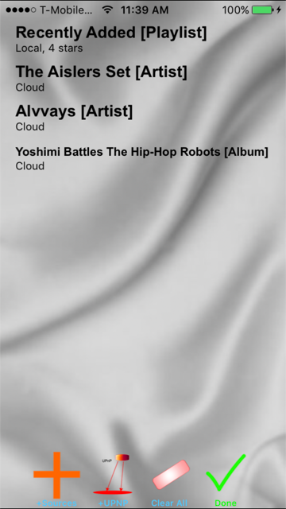
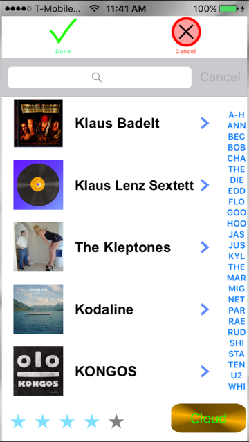

Editing Channels
Selecting items to add
Advanced selection (zooming)
Settings
Podcasts
Internet Radio
Contact us
UPNP
The AudioGalaxy media player lets you create multiple on-the-fly channels, each matched to a radio button. You then switch from one channel to another just by pressing the channel's button. You can see the gold channel buttons at the bottom of the screen image below.
AudioGalaxy remembers where you are in each channel, so you can resume playing any channel where you left off.
Channels come in three types: music channels, podcast channels and radio channels. Music channels contain collections of music by specific artists, music in specific albums, or specific songs. Podcast channels contain selections from one or more podcasts, and are automatically sorted by date. And radio channels contain one or more Internet radio stations, which can be switched between using the next and previous buttons.
You can define a new channel by selecting the metallic radio button from
the bottom with which to associate the channel, and then either press the
edit button at the top, if you're not changing the channel type, or select
the main menu button and then press the appropriate "+Define
To program a channel, select the "Channel Details" button at the top left of the screen. This brings up a list of the channels current contents. Press the "Define" button on that screen, and AudioGalaxy will bring up the sources defining the channel. To add a new Source, press "+" button within the Sources screen. To remove a source, swipe left to expose the "Delete" button.
In the screen above, the channel consists of all songs in the "Recently Added" iTunes playlist rated 4 stars and above, and which are present on the iPhone, combined with all the songs by the group "The Aislers Set" in the iTunes library, whether present on the phone or not, combined with all the songs by "Alvvays", again in the iTunes library, whether on the phone or not, finally combined with the album "Yoshi Battles The Hip-Hop Robots." Once you press the Done button, you'll see the "Channel Contents" button again, and can press the "Randomize" button if you wish the songs to be played in random order.
If one or more of the source entries were created in error, you can remove the entry by swiping left on the entry, and confirming with the exposed "Delete" button. If you want to clear all entries and define this channel from scratch, you press the "Clear All" button.
Items are added to the channel's song list in the order in which you select them. Once you have a channel defined, you can also change the order of play in the "Channel Contents" screen by dragging the items into the desired order.
If you press the details button (">"), instead of selecting that playlist, artist or album, you will zoom into a new selection screen showing only the songs in that group. For example, if you press the ">" button after selecting the album "Another Green World", you'll bring up a sub-selection screen containing only songs from that album.
You can select the specific songs you want to include; a check mark will appear by the selected songs. When you press "Done" in a zoomed view, the selected items are added to the channel immediately, and you return to the previous selection screen.
The "Settings" menu is reached from the "Menu" icon at the top right of the main screen.
The first item in the setting list forces the application to reload its choice tables from the iTunes library when the iTunes library changes. You shouldn't need to press this, since the app should notice on its own when new items are present in the library, and reload its lists next time you edit a channel's definition.
The next item in the settings list sets the default in the media selection screens for the Cloud setting. If you typically want Cloud items included in your channel lists, press this setting to default the Cloud edit button to enabled.
Note: if you enable playing cloud iTunes library items, you MUST enable the use of the cloud for playing music, as described below. If you don't, AudioGalaxy will get skip the songs not present on your phone, and we'll all be unhappy.
On iOS 8.3 and before, go to Settings / Music and enable "Show All Music".
On iOS 9 and later, go to Settings / Music and select "Show Apple Music," which seems to include your purchased Music, even if you're not using Apple Music. Also, if the option is present in your iOS version, enable "Cellular Data" on the same screen if you want to be able to stream music while outside of WiFi range.
Note that to enable cellular music, you must turn on the "Cellular Data" setting above, and, in Settings / Cellular, turn on "Cellular Data" and make sure on the same screen that the switch enabling the app "AudioGalaxy" for cellular data is also turned on.
The next item in the settings controls whether anonymous usage information will be shared with the developers of AudioGalaxy. This information consists only of the type of media played (song, podcast, or radio station), and the time it is played, to help development prioritize features. It defaults to "on."
The next settings item tells whether all podcasts should automatically be downloaded. It defaults to off.
The next setting button, when pressed, immediately unloads all downloaded podcasts from the library.
The next setting button resets all per-screen warnings so that the user will see all the warnings again, until each is individually dismissed.
The next setting button shows this application help; you probably knew that already.
The next setting controls whether podcasts are unloaded after they finish playing. The default is not to automatically unload podcasts.
The next setting button gets you to the UPnP configuration screen, described in its own section below.
The next setting controls whether the screen will dim after a minute of not being touched.
The next setting gets you to the "History" page, which lets you see the history of music played by Internet radio stations that announce their songs via the Icecast metadata embedding protocol.
Podcasts are selected by pressing the "+Define Podcast channel" item from the main menu. You search for podcasts, even though none of their names appear until you do a search. The search brings up podcast shows, not individual episodes of those shows, so you will need to visit the Channel Contents screen load the specific podcast episodes you want to hear.
Only downloaded episodes can be played, so you will also need to specifically download the episodes you want to hear. When playing a channel containing podcasts, the player will skip unloaded podcasts. To download a podcast, swipe left on the episode, and press the exposed "DnLoad" button.
If you want to save an episode of a podcast on your computer, you can swipe left on the episode and press the exposed "Export" button. A copy of the podcast will be placed in the directory shared via iTunes, from which you can cop the file to your Apple desktop. Exported episodes can be deleted from the "Manage Downloads" menu item or from iTunes itself.
You can now add Internet radio stations to a channel. Unlike all the other items, radio stations don't advance to the next item when done, since they're never done. You can still put more than one station in a channel, but you have to switch manually between them using the "Channel Details" button, or by pressing the Next or Prev buttons on the main player.
Note that some radio stations may not play, although we've done our best to filter out dead stations or stations that only stream incompatible formats. Radio stations typically may stop when you switch between Wifi and cell networks: the player should automatically resume within about 20 seconds of losing your Wifi signal. There used to be a bug that prevented the player from restarting the channel, which required that you switch to a different radio station, and then back, to restart, and I'm leaving this description here just in case.
Radio stations can be recorded by pressing the big red "Record" button while listening to a radio station. Recording will stop if you change to another AudioGalaxy channel, or switch to another radio station in the same channel. While recording, the button flashes red/orange.
Recordings are made from the Internet data stream, not through some hack like recording the sound via the microphone, so you don't have to worry about ambient noise affecting the recording. The recorded file type matches the type of data streamed, but QuickTime can be used to convert between AAC and MP3 file types.
Recordings can be managed by going to the "Menu" button and selecting the "Manage Downloads" menu item. You'll see exported podcasts and saved radio programs in the resulting screen, and if you swipe left, you'll see options to "Play" a recording, "Rename" the file to something more meaningful, or "Delete" the file. Files in this directory are visible from iTunes, and iTunes can even add files to this directory.
AudioGalaxy comes preloaded with a set of Internet radio stations from http://radiosure.com/stations, after filtering out those whose streaming addresses don't seem to be responding.
When adding radio stations to a channel, an "Add Custom" ("+") button is provided to add a radio station not in our database. This should be address of the HTTP transport stream itself.
Many radio stations have a presence on streamtheworld.com. The
stream URLs have similar patterns, such as:
http://16893.live.streamtheworld.com/WYEPFMAAC.aac
http://17023.live.streamtheworld.com/WERSFMAAC.aac
http://16893.live.streamtheworld.com/WESAFM.mp3
That is, one of the canned hosts (16893.live.streamtheworld.com,
17023.live.streamtheworld.com) followed by the station call letters, followed by an
optional FM or AM, followed by an optional media type (MP3 or AAC), followed by
a period (.) and then the media type again (mp3 or aac).
Other numbers that might precede ".live.streamtheworld.com" include 16903, 13733, 16863, 16893, 18853, 17023, 16853, 17563, 14213 18783, and 19013. I have no idea how stations are assigned these numbers; you may have to guess. If you type a valid stream URL into your browser title bar, however, you'll hear the station play, so you can test a guessed URL very easily.
If you don't want to guess, you can often find the stream by starting the station playing from Safari, select "Show Page Resources" from "Develop", then click on "Network" and then double click on a resource with the call letters in the name. It will open a new tab on the exact web stream.
AudioGalaxy can stream music from your local DLNA / UPNP servers. The process is a little involved: first you browse for the servers, then you load the names of the available songs into AudioGalaxy, and finally you select the desired songs from the channel definition screen, just like you'd add more music from your iTunes library, only using the "UPnp" buttons instead. In more detail:
To add music from a UPNP/DLNA server, press "Setup UPNP Music Servers" in the Main menu or the Settings menu. Then press "Find Servers" to browse for music servers (you may have to browse multiple times to find all servers on your LAN), and then select one server at a time, and press "Load From Selected" to read the music directories from that server. Once the music has been loaded, it can be added through the usual music channel definition button.
You can redo the "Find Servers" operation to find new servers at any time, and you can redo the "Load From Selected" operation to discover newly added music on the server.
Once a music directory has been loaded, you do not have to reload it except to pick up new music from the server.
Once UPNP music has been added to a channel, you can stream it immediately from your LAN, or you can go to the channel list, swipe left on any UPNP-resident song, and download it onto the phone for offline listening.
Thanks to Dan N. and John A. for being a great testers, and thanks to user zy0rg (http://zy0rg.deviantart.com) for use of "Macro Galaxy" for the default album cover in previous versions. Thanks to the Hubble space telescope for the deep field background on the default image. Thanks to Leah Kazar, for drawing the record image that appears in a number of locations in the app.
We'd love to hear your comments and suggestions. You can reach us via email at djtogoapp@gmail.com